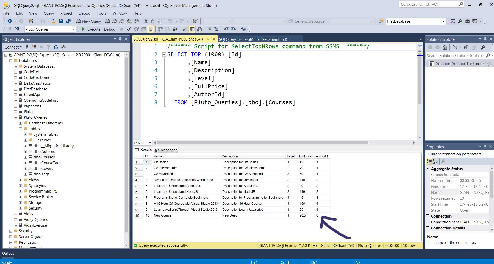
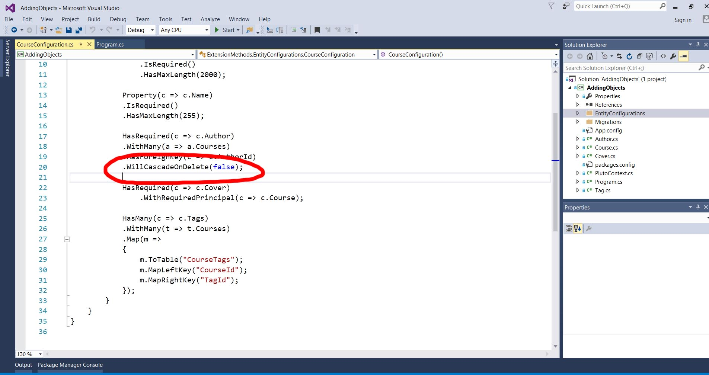
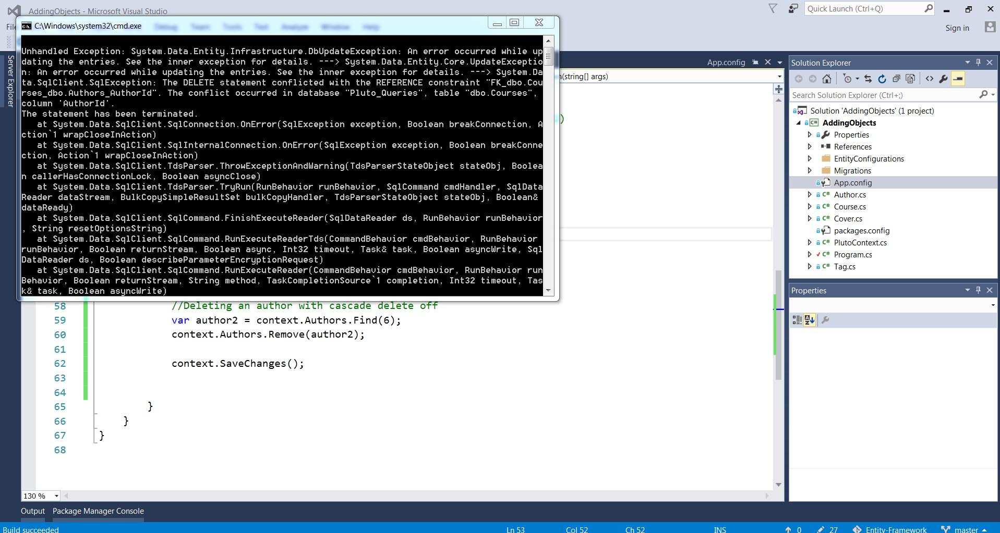
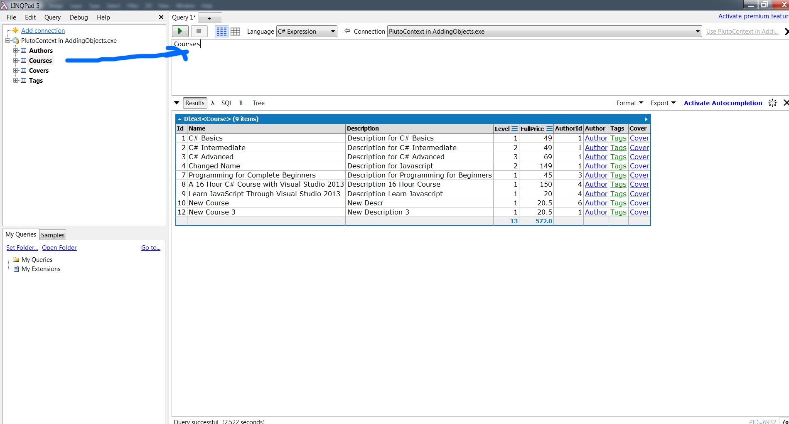
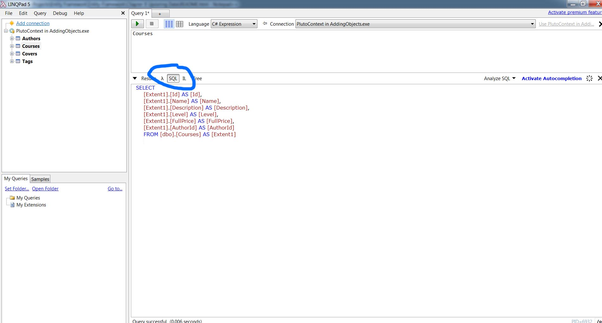

Updating Data
ChangeTracker
Inside the context we have a component called ChangeTracker that is responsible for keeping track of the state of objects.
When we add a new object in context change tracker sees that and marks it as a new object with the state of added.
When we modify one of the existing objects in the context again change tracker sees that and changes the state of that object to modify it. Finally when we remove an existing object Change Tracker sets its to deleted.
None of these modifications are reflected in the database. They all are in the memory.
When we call the Save method entity framework looks at the State of these objects and based on them it creates different queries to
update the database. When this happens Change Tracker sets the state of these objects to Unchanged.
Adding Objects
Inside the context we have a component called Change Tracker that is responsible for keeping track of the state of objects.
When we add a new object in context change tracker sees that and marks it as a new object with the state of added.
When we modify one of the existing objects in the context again change tracker sees that and changes the state of that object to modify it. Finally when we remove an existing object Change Tracker sets its to deleted.
None of these modifications are reflected in the database. They all are in the memory.
When we call the Save method entity framework looks at the State of these objects and based on them it creates different queries to
update the database. When this happens Change Tracker sets the state of these objects to Unchanged.
By running the below code we will see that a new Author was added with number 6 as shown in image below. The reason is we instantiating a new author.
var course = new Course
{
Name = "New Course",
Description = "New Descr",
FullPrice = 20.50f,
Level = 1,
Author = new Author { Id = 1, Name = "Mosh Hamedani" }
};
context.Courses.Add(course);
context.SaveChanges();

To fix the above we have two ways :
Bring author object into our db context so entity framework will know tha exists in database. This approach works in WPF applications.
//For WPF apps
var authors = context.Authors.ToList();
var author = context.Authors.Single(a => a.Id == 1);
var course = new Course
{
Name = "New Course 2",
Description = "New Description 2",
FullPrice = 20.50f,
Level = 1,
Author = author
};
context.Courses.Add(course);
context.SaveChanges();
With first way if if the author object is not in any context entity framework is gonig to run a query in the database
and this will have a slight impact on the performance of our application. Use this apporach when we have the object in memory.
Second way is to use the Author Id foreign key property. This approach works in web applications(MVC projects).
//For Web apps
var course2 = new Course
{
Name = "New Course 3",
Description = "New Description 3",
FullPrice = 20.50f,
Level = 1,
AuthorId = 1
};
context.Courses.Add(course2);
context.SaveChanges();
There is a third approach tha isn't used a lot by using Attach().
Updating data
We have a very useful method Find(). It finds the object by id. It's like using Single weith a lambda expression. Also if
your records have composite primary keys you can pass multiple values.
var course3 = context.Courses.Find(12);// Single (c => c.Id == 12)
course3.Name = "Changed Name";
course3.AuthorId = 2;
context.SaveChanges();
Removing Objects
Cascade Delete
When using code first migrations by default cascade delete is enabled. We can see it disabled here :

var course4 = context.Courses.Find(11);
context.Courses.Remove(course4);
context.SaveChanges();
Since we have cascade delete all related atgs are automatically deleted.
Without Cascade Delete
Since we don 't have cascade delete on we need to explicity delete the courses first and then delete the author or the parent.

We must always check the last exception and if it comes directly from SQL server it means entity framework did its job but the query couldn't be executed. In the exception as seen in cascade_delete_excpetion since we have courses depended from this author we must first delete these courses and then the author.
Wrong that will throw an error
var author2 = context.Authors.Find(6);
context.Authors.Remove(author2);
context.SaveChanges();
Correct way
RemoveRange removes a list so you don't have to use a foreach. Find doesn't work with Include so we use Single.
var author2 = context.Authors.Include(a => a.Courses).Single(a => a.Id == 2);
context.Courses.RemoveRange(author2.Courses);
context.Authors.Remove(author2);
context.SaveChanges();
In most times we don't have to delete records from the database because we might need them in the future for historical reasons, we might made a mistake deleting them. So the best approach is to create another column and call it for example IsDeleted and will take a boolean variable.
Working with change Tracker
It's not used very often but we use it when we have any issues in our db context. ChangeTracker checks the state of an object
Added, Modified ,Delete, Unchanged.When we call SaveChanges Entity framework will act Accordingly to these with SQL queries.

Show all entries
context.ChangeTracker.Entries()
Show all author entries
context.ChangeTracker.Entries();
Then we iterate and see in our watch window what s happeining.
foreach (var entry in entries)
{
Console.WriteLine(entry.State);
}
Also we have Reload which Reloads something directly from the database.
entry.Reload();
LINQPad
LINQPad is an application that you can work with LINQ. You can download it from here : https://www.linqpad.net/
At the left side we add a connection. We can connect to a database in our SQL server or to our DBContext in our application.
If we already have a bbcontext we select EntityFramework DbContext. Then we choose the path for our assembly which is in the bin folder ->Debug of our project. Then we specify the configuration file.
We don't have to type context just to drag and drop the table.

By pressing f5 we bring all courses which will return a dbset. Next to it we have SQL tab which shows the SQL query like SQL profiler.

LINQPad is easier than using watch window and inspecting variables there. Though THIS IS NOT a replacement for debugging and watching variables.